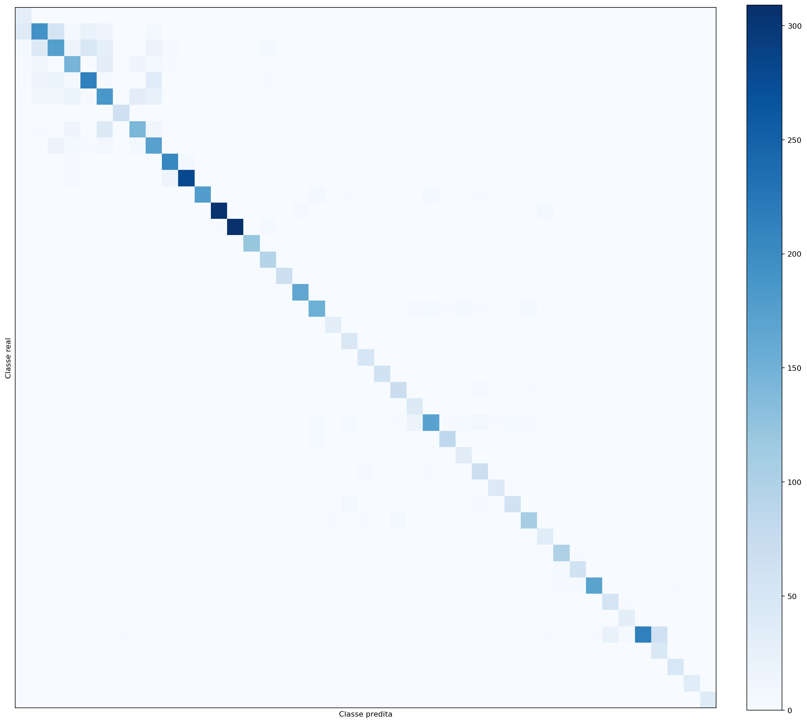
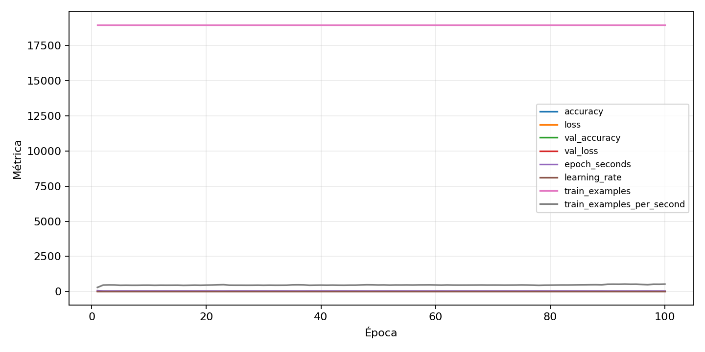

| n_samples | 5876 |
|---|---|
| loss | 0.49217894673347473 |
| accuracy | 0.8301565690946222 |
| balanced_accuracy | 0.8972622476975674 |
| macro_f1 | 0.8568044502282838 |


| Índice | Classe | Suporte | Precisão | Recall | F1 |
|---|---|---|---|---|---|
| 0 | 0 | 31 | 0.379746835443038 | 0.967741935483871 | 0.5454545454545455 |
| 1 | 1 | 333 | 0.7148148148148148 | 0.5795795795795796 | 0.6401326699834162 |
| 2 | 2 | 337 | 0.6272401433691757 | 0.5192878338278932 | 0.5681818181818182 |
| 3 | 3 | 211 | 0.6606334841628959 | 0.6919431279620853 | 0.6759259259259259 |
| 4 | 4 | 297 | 0.7421602787456446 | 0.7171717171717171 | 0.7294520547945206 |
| 5 | 5 | 283 | 0.6045751633986928 | 0.6537102473498233 | 0.6281833616298812 |
| 6 | 6 | 67 | 0.9696969696969697 | 0.9552238805970149 | 0.9624060150375939 |
| 7 | 7 | 211 | 0.7282051282051282 | 0.6729857819905213 | 0.6995073891625615 |
| 8 | 8 | 211 | 0.6323529411764706 | 0.8151658767772512 | 0.7122153209109731 |
| 9 | 9 | 220 | 0.8995633187772926 | 0.9363636363636364 | 0.9175946547884187 |
| 10 | 10 | 301 | 0.9722222222222222 | 0.9302325581395349 | 0.9507640067911715 |
| 11 | 11 | 198 | 0.9943820224719101 | 0.8939393939393939 | 0.9414893617021277 |
| 12 | 12 | 315 | 0.9807073954983923 | 0.9682539682539683 | 0.9744408945686902 |
| 13 | 13 | 324 | 0.9935691318327974 | 0.9537037037037037 | 0.9732283464566929 |
| 14 | 14 | 121 | 0.983739837398374 | 1.0 | 0.9918032786885246 |
| 15 | 15 | 94 | 0.8761904761904762 | 0.9787234042553191 | 0.9246231155778896 |
| 16 | 16 | 67 | 0.9852941176470589 | 1.0 | 0.9925925925925926 |
| 17 | 17 | 166 | 0.9763313609467456 | 0.9939759036144579 | 0.9850746268656716 |
| 18 | 18 | 180 | 0.9047619047619048 | 0.8444444444444444 | 0.8735632183908046 |
| 19 | 19 | 31 | 0.8823529411764706 | 0.967741935483871 | 0.923076923076923 |
| 20 | 20 | 49 | 0.7796610169491526 | 0.9387755102040817 | 0.8518518518518519 |
| 21 | 21 | 49 | 0.9074074074074074 | 1.0 | 0.9514563106796117 |
| 22 | 22 | 58 | 0.9666666666666667 | 1.0 | 0.983050847457627 |
| 23 | 23 | 76 | 0.8625 | 0.9078947368421053 | 0.8846153846153847 |
| 24 | 24 | 40 | 0.6153846153846154 | 1.0 | 0.761904761904762 |
| 25 | 25 | 225 | 0.9344262295081968 | 0.76 | 0.838235294117647 |
| 26 | 26 | 90 | 0.9431818181818182 | 0.9222222222222223 | 0.9325842696629215 |
| 27 | 27 | 36 | 0.6862745098039216 | 0.9722222222222222 | 0.8045977011494253 |
| 28 | 28 | 76 | 0.7790697674418605 | 0.881578947368421 | 0.8271604938271606 |
| 29 | 29 | 40 | 0.8666666666666667 | 0.975 | 0.9176470588235294 |
| 30 | 30 | 67 | 0.855072463768116 | 0.8805970149253731 | 0.8676470588235295 |
| 31 | 31 | 121 | 0.8925619834710744 | 0.8925619834710744 | 0.8925619834710744 |
| 32 | 32 | 36 | 0.782608695652174 | 1.0 | 0.878048780487805 |
| 33 | 33 | 103 | 0.9174311926605505 | 0.970873786407767 | 0.9433962264150944 |
| 34 | 34 | 63 | 0.9076923076923077 | 0.9365079365079365 | 0.9218749999999999 |
| 35 | 35 | 180 | 0.9883040935672515 | 0.9388888888888889 | 0.962962962962963 |
| 36 | 36 | 58 | 0.7142857142857143 | 0.9482758620689655 | 0.8148148148148149 |
| 37 | 37 | 31 | 0.8378378378378378 | 1.0 | 0.911764705882353 |
| 38 | 38 | 310 | 0.9953271028037384 | 0.6870967741935484 | 0.8129770992366413 |
| 39 | 39 | 45 | 0.4166666666666667 | 1.0 | 0.5882352941176471 |
| 40 | 40 | 49 | 0.9230769230769231 | 0.9795918367346939 | 0.9504950495049506 |
| 41 | 41 | 36 | 0.9473684210526315 | 1.0 | 0.972972972972973 |
| 42 | 42 | 40 | 0.9743589743589743 | 0.95 | 0.9620253164556962 |
{"adapter":"gtsrb","balance_mode":"undersample","class_names":["0","1","2","3","4","5","6","7","8","9","10","11","12","13","14","15","16","17","18","19","20","21","22","23","24","25","26","27","28","29","30","31","32","33","34","35","36","37","38","39","40","41","42"],"dataset":"gtsrb","dataset_options":{},"dataset_root":"/home/msduda/datasets-tcc/gtsrb","native_channels":3,"normalization":"zscore","num_classes":43,"protocol":{"checkpoint_monitor":"val_macro_f1","dtype_policy":"mixed_float16","early_stopping":{"patience":10,"restore_best_weights":true},"evaluation_augmentation":false,"input_channels":"native","optimizer":"Adam","pretrained_weights":false,"reduce_lr_on_plateau":{"factor":0.3,"min_lr":1e-07,"patience":4},"resize":"proportional_padding","test_time_augmentation":false,"training_from_scratch":true},"seed":42,"source_fingerprint":"e07bdb2a0cbaaa95924cda55fec26c2902b0cc736e3c6de8531ff96b0c7ee2e8","source_manifest":{"class_names":["0","1","2","3","4","5","6","7","8","9","10","11","12","13","14","15","16","17","18","19","20","21","22","23","24","25","26","27","28","29","30","31","32","33","34","35","36","37","38","39","40","41","42"],"joined_samples":39270,"metadata":{"layout":"gtsrb-folders-or-csv"},"name":"gtsrb","native_channels":3,"source_path":"/home/msduda/datasets-tcc/gtsrb","splits":{"test":12630,"train":26640},"target_size":128},"target_size":128,"test_fraction":0.15,"train_fraction":0.7,"training":{"augmentation":{"brightness_delta":0.03,"contrast_lower":0.92,"contrast_upper":1.08,"cutout_max_frac":0.08,"cutout_prob":0.25,"flip_lr":true,"noise_std":0.005,"translate_frac":0.05,"zoom_max":1.04,"zoom_min":0.96},"batch_size":512,"default_image_size":64,"dtype_policy":"mixed_float16","early_stopping_patience":10,"extra_fraction":2.0,"image_size_overrides":{"gtsrb":128},"keras_verbose":1,"learning_rate":0.0003,"max_epochs":100,"preprocess_cache_max_mib":2048,"reduce_lr_factor":0.3,"reduce_lr_min_lr":1e-07,"reduce_lr_patience":4,"shuffle_buffer_max_mib":1024},"validation_fraction":0.15}
{"epochs_completed":100,"epochs_recorded":100,"evaluation_seconds":17.142127913000877,"fit_seconds_current_attempt":4533.994903434999,"max_epoch_seconds":64.95289672699437,"max_epochs":100,"mean_epoch_seconds":41.05872983633948,"mean_train_examples_per_second":463.7317296517408,"median_train_examples_per_second":459.4286853972766,"min_epoch_seconds":35.82862851700338,"selected_checkpoint":"/mnt/e/tcc-benchmark/outputs/remaining-ram-capped/gtsrb/runs/gtsrb__zscore__undersample__seed-42/checkpoints/best.keras","total_seconds":4105.872983633948,"training_seconds":4105.872983633948,"wall_seconds_current_attempt":4595.753733912003}
{"elapsed_seconds":4595.830184234001,"event_counts":{"data_preparation_end":1,"data_preparation_start":1,"epoch_end":100,"evaluation_end":1,"evaluation_start":1,"fit_end":1,"fit_start":1,"periodic":907,"run_completed":1,"train_start":1},"generated_at":"2026-08-01T17:35:33.190+00:00","gpu_backend":"pynvml","interval_seconds":5.0,"metrics":{"cpu_percent":{"count":1015,"max":13.5,"mean":7.1182266009852215,"min":0.0,"p50":7.3,"p95":7.8},"disk_data_free_bytes":{"count":1015,"max":998258016256.0,"mean":998258016191.4325,"min":998258008064.0,"p50":998258016256.0,"p95":998258016256.0},"disk_data_percent":{"count":1015,"max":2.7,"mean":2.7,"min":2.7,"p50":2.7,"p95":2.7},"disk_data_total_bytes":{"count":1015,"max":1081101176832.0,"mean":1081101176832.0,"min":1081101176832.0,"p50":1081101176832.0,"p95":1081101176832.0},"disk_data_used_bytes":{"count":1015,"max":27850813440.0,"mean":27850805312.567486,"min":27850805248.0,"p50":27850805248.0,"p95":27850805248.0},"disk_output_free_bytes":{"count":1015,"max":248567398400.0,"mean":248553644237.80887,"min":248552304640.0,"p50":248553111552.0,"p95":248554086400.0},"disk_output_percent":{"count":1015,"max":75.1,"mean":75.1,"min":75.1,"p50":75.1,"p95":75.1},"disk_output_total_bytes":{"count":1015,"max":1000186310656.0,"mean":1000186310656.0,"min":1000186310656.0,"p50":1000186310656.0,"p95":1000186310656.0},"disk_output_used_bytes":{"count":1015,"max":751634006016.0,"mean":751632666418.1912,"min":751618912256.0,"p50":751633199104.0,"p95":751633670144.0},"elapsed_seconds":{"count":1015,"max":4595.754755,"mean":2307.962696594089,"min":0.029627,"p50":2310.339692,"p95":4382.7285138},"gpu_count":{"count":1015,"max":1.0,"mean":1.0,"min":1.0,"p50":1.0,"p95":1.0},"gpu_memory_percent":{"count":1015,"max":95.02692222595215,"mean":89.88204486264384,"min":85.38260459899902,"p50":90.78474044799805,"p95":94.42038536071777},"gpu_memory_total_bytes":{"count":1015,"max":8589934592.0,"mean":8589934592.0,"min":8589934592.0,"p50":8589934592.0,"p95":8589934592.0},"gpu_memory_used_bytes":{"count":1015,"max":8162750464.0,"mean":7720808863.653202,"min":7334309888.0,"p50":7798349824.0,"p95":8110649344.0},"gpu_temperature_c":{"count":1015,"max":61.0,"mean":55.53399014778325,"min":40.0,"p50":55.0,"p95":59.0},"gpu_utilization_percent":{"count":1015,"max":100.0,"mean":34.58325123152709,"min":0.0,"p50":18.0,"p95":98.0},"process_cpu_percent":{"count":1015,"max":165.2,"mean":86.01408866995074,"min":15.7,"p50":89.4,"p95":94.9},"process_read_bytes":{"count":1015,"max":474374144.0,"mean":474356864.12610835,"min":473559040.0,"p50":474374144.0,"p95":474374144.0},"process_rss_bytes":{"count":1015,"max":8981319680.0,"mean":7930483374.029556,"min":4743761920.0,"p50":7991353344.0,"p95":8096006144.0},"process_vms_bytes":{"count":1015,"max":52045328384.0,"mean":51115034686.54975,"min":49244782592.0,"p50":51077840896.0,"p95":51482185728.0},"process_write_bytes":{"count":1015,"max":1241088.0,"mean":1241088.0,"min":1241088.0,"p50":1241088.0,"p95":1241088.0},"ram_available_bytes":{"count":1015,"max":11944538112.0,"mean":8754735089.875862,"min":7708803072.0,"p50":8689659904.0,"p95":9063353548.8},"ram_percent":{"count":1015,"max":53.6,"mean":47.32206896551724,"min":28.1,"p50":47.7,"p95":48.3},"ram_total_bytes":{"count":1015,"max":16619089920.0,"mean":16619089920.0,"min":16619089920.0,"p50":16619089920.0,"p95":16619089920.0},"ram_used_bytes":{"count":1015,"max":8910286848.0,"mean":7864354830.124138,"min":4674551808.0,"p50":7929430016.0,"p95":8022808985.6}},"sample_count":1015,"schema_version":1}